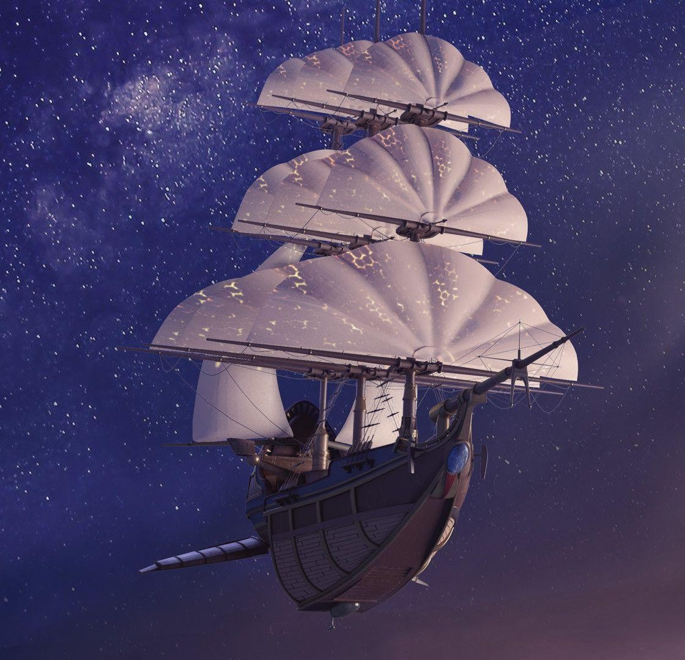
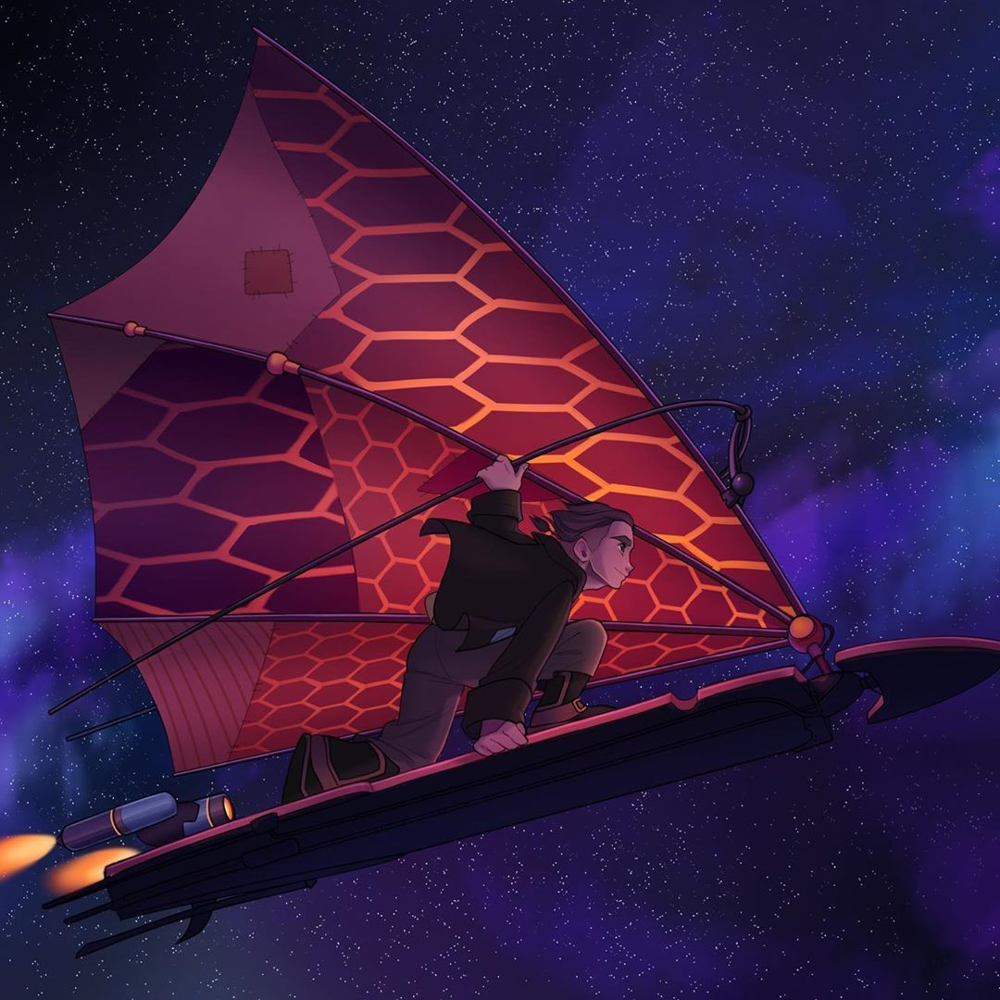
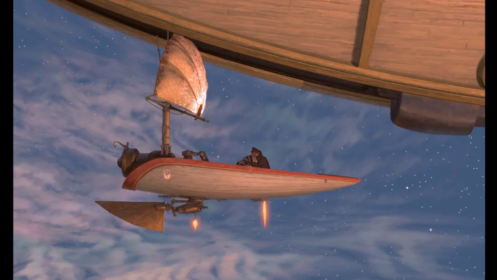
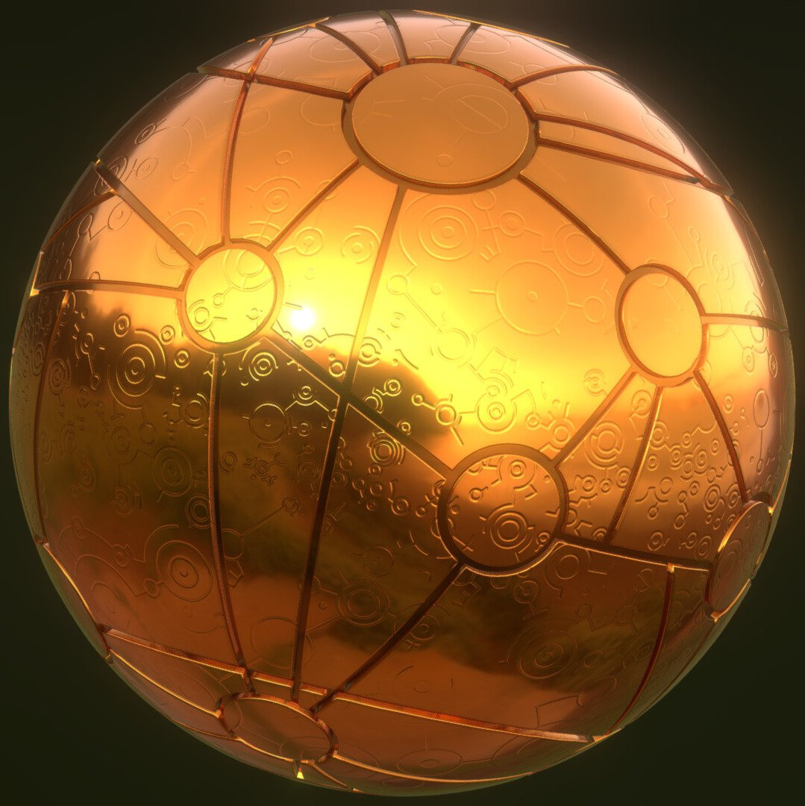
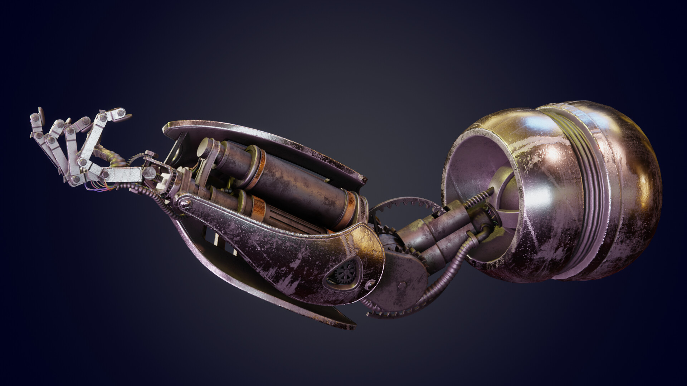

01. The R.L.S. Legacy
A majestic Solar powered space galleon equipped with Etherium capturing sails, gravity generations, and broudside plasma cannons.
Max speed: Wrap Grade 4Explore the magnificent solar galloens, gliders, and ancient cosmic mechanics of the cosmos.

A majestic Solar powered space galleon equipped with Etherium capturing sails, gravity generations, and broudside plasma cannons.
Max speed: Wrap Grade 4
Handcrafter by Jim Hawkins, this high speed glider combines a rocket thruster with a flexible solar sail for extreme maneuvers.
Custom Build Tech
Lightweight deployment vessels used by John Silver Crew for stealth raids and atmospheric landing operations.
Agile & Stealthy
An intricate golden sphere created by Captain Flint, projecting a 3d celestic navigational map to Treasure Planet.
Flint's Legacy Artifact
High grade mechanical prosthetics like John Silver's multi-tool arm, featuring built-in blowtorches and optical targeting systems.
Biomechanical Implants
The colossal ancient machine at the heart of Treasure Planet, capable of opening instantaneous spatial portals to any point in the universe.
Interdimensional Gate